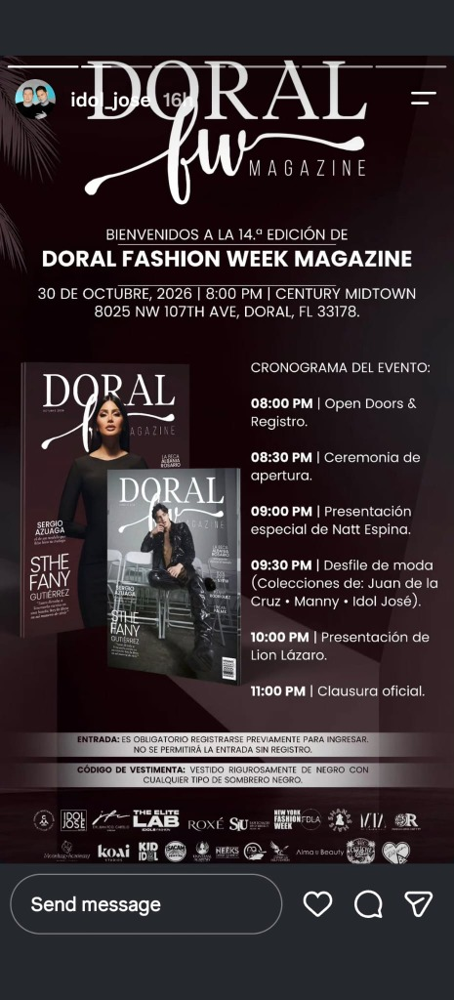

El ecosistema donde convergen alta moda, prensa y tecnología.
IDOL JOSE GROUP CORP articula un portafolio de marcas líderes en diseño de alta costura, plataformas de pasarela internacional, medios editoriales de lujo, formación artística de élite y soluciones de Inteligencia Artificial para marcas en Estados Unidos y Latinoamérica.

Las Divisiones de IDOL JOSE GROUP CORP
Cada vertical opera como un motor especializado dentro del ecosistema corporativo, conectando creativos, empresarios, patrocinadores y audiencias de alto poder adquisitivo.
IDOL JOSE Official
Casa matriz de alta costura y sastrería arquitectónica fundada por los Dres. Idolfredo Hernández y Juan Francisco Cabello. Pasarelas en NYFW, LAFW y boutique digital con logística automatizada.
Doral Fashion Week Magazine
Medio editorial impreso y digital con 14 ediciones consagradas al diseño de autor, líderes empresariales, cultura y estilo de vida de lujo en Miami y Doral.
Idol Fashion: The Elite Lab
Centro de alto rendimiento técnico y management para modelos, diseñadores y fotógrafos con proyección directa a las pasarelas de Nueva York y Miami.
Doral Fashion Week
El evento cumbre de pasarelas, galas y exhibición de moda en Doral, Florida. Punto de encuentro para diseñadores internacionales, prensa VIP y marcas patrocinadoras.
Doral Business City
Comunidad empresarial, revista de negocios y plataforma de posicionamiento para empresas, boutiques, clínicas y corporativos de alto nivel en el sur de la Florida.
Agencia Prosper IA · Edward Jiménez
Socio tecnológico oficial del grupo. Implementación de agentes de Inteligencia Artificial, automatización comercial y arquitectura web para las marcas y clientes del ecosistema.
“La tecnología sirve cuando resuelve, libera tiempo y hace crecer.”
En la 14.ª Edición de Doral Fashion Week Magazine, Edward Jiménez —fundador de Agencia Prosper IA en Miami y director de transformación digital del ecosistema IDOL JOSE GROUP CORP— comparte cómo las marcas de moda, boutiques y empresas en crecimiento eliminan el peso operativo mediante Inteligencia Artificial aplicada con criterio ejecutivo.